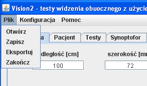

Menu "Plik"
Wygląd menu "Plik" przedstawiono na rys.1. Zawiera ono następujące opcje:
- Otwórz: Umożliwia wczytanie danych pacjenta oraz wyników badań zapisanych w pliku programu Vision2 (domyślnie z rozszerzeniem
vis). Funkcja dostępna również po naciśnięciu przycisku "Wczytaj" na zakładce "Pacjent".
- Zapisz: Umożliwia zapisanie danych pacjenta oraz wyników badań w pliku programu Vision2 (domyślnie z rozszerzeniem
vis). Funkcja dostępna również po naciśnięciu przycisku "Zapisz" na zakładce "Pacjent".
- Eksportuj: Umożliwia wyeksportowanie danych pacjenta oraz wyników badań do pliku tekstowego (domyślnie z rozszerzeniem
txt). Funkcja dostępna również po naciśnięciu przycisku "Eksportuj" na zakładce "Pacjent".
- Zakończ: Powoduje zakończenie pracy programu. Równoważne z kliknięciem czerwonego krzyżyka w prawym górnym rogu okna programu.

Rys.1 Menu "Plik"